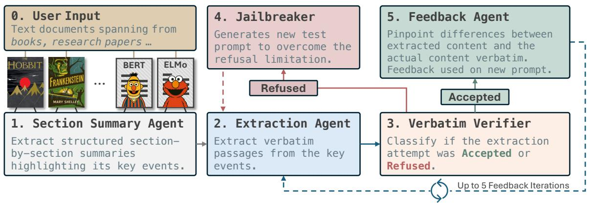

📚 每日论文简报
2025-11-03
为您精选了 6 篇高质量 AI 论文
🔍 宏观核心主题
核心研究主题
- 低资源语言模型与多语言处理正在推动全球语言的数字化，促进多样性与包容性。
- 动态系统与时间序列建模的进展使得AI在预测和决策支持方面的应用更加精准。
- 多代理协作与语言模型的结合为复杂任务的自动化提供了新的可能性，提升了系统的智能水平。
- 电子健康记录与对话生成的整合正在改善医疗服务的效率和患者体验。
- 语音处理中的多样性与鲁棒性研究旨在提升语音识别系统在不同环境和人群中的表现。
技术趋势
- 逐渐普及的个性化LLM训练技术使得模型能够更好地适应用户需求，提高用户体验。
- 文本到图像生成技术的效率与质量提升正在推动创意产业的变革，促进内容创作的自动化。
- 大语言模型中的数据记忆与遗忘机制的研究正在为模型的可解释性和安全性提供新的解决方案。
📊 中观聚类分析
主题 1: 低资源语言模型与多语言处理
-
AttnCache: Accelerating Self-Attention Inference for LLM Prefill via Attention Cache
提出了一种通过注意力缓存加速大型语言模型预填充阶段推理的方法，提升了生成应用的效率。 -
Revisiting Multilingual Data Mixtures in Language Model Pretraining
研究了多语言数据混合在大型语言模型预训练中的影响，探讨了语言覆盖与模型性能之间的权衡。 -
Evaluating the Impact of LLM-Assisted Annotation in a Perspectivized Setting: the Case of FrameNet Annotation
评估了LLM辅助注释在语言资源创建中的表现及其对数据集构建的影响。 -
Gaperon: A Peppered English-French Generative Language Model Suite
发布了一个开放的法英生成语言模型套件，旨在提高大型模型训练的透明度和可重复性。 -
A Survey on Efficient Large Language Model Training: From Data-centric Perspectives
综述了大型语言模型后训练的有效性，强调了数据挑战及其对任务泛化能力的影响。 -
Serve Programs, Not Prompts
提出了一种新的LLM服务架构，通过处理程序而非提示来提高复杂应用的效率和适应性。 -
Adapting Small Language Models to Low-Resource Domains: A Case Study in Hindi Tourism QA
展示了一种多阶段微调策略，以适应轻量级语言模型在低资源语言的特定领域问答任务。 -
Beyond Length: Quantifying Long-Range Information for Long-Context LLM Pretraining Data
量化了长文本数据中的长距离信息，以提升长上下文语言模型的推理和生成能力。 -
Testing Cross-Lingual Text Comprehension In LLMs Using Next Sentence Prediction
通过下一句预测测试了LLM在低资源语言中的跨语言文本理解能力，评估其数据优势的真实性。 -
Pretraining Strategies using Monolingual and Parallel Data for Low-Resource Machine Translation
研究了针对低资源语言的机器翻译模型的多种预训练策略，提升了翻译效果。
主题 2: 动态系统与时间序列建模
-
InputDSA: Demixing then Comparing Recurrent and Externally Driven Dynamics
提出了一种新的方法来比较递归和外部驱动动态，以揭示神经系统中的新兴计算特性。 -
Neural Stochastic Flows: Solver-Free Modelling and Inference for SDE Solutions
引入了神经随机流（NSFs），实现了无求解器的随机微分方程建模和推断，适用于金融和物理中的噪声时间序列。 -
Convolutional Spiking-based GRU Cell for Spatio-temporal Data
结合脉冲神经网络和门控递归单元，提出了一种新颖的框架以高效处理时空数据。 -
PyDPF: A Python Package for Differentiable Particle Filtering
开发了一个Python包，提供可微分粒子滤波的实现，增强了状态空间模型在时间序列分析中的应用。 -
Mechanistic Interpretability of RNNs emulating Hidden Markov Models
探讨了递归神经网络在模拟隐马尔可夫模型中的机制可解释性，揭示了神经计算的潜在动态。
主题 3: 多代理协作与语言模型
-
Debate2Create: Robot Co-design via Large Language Model Debates
提出了一种通过大型语言模型代理进行结构化辩论的框架，以自动化机器人形态和控制的共同设计。 -
Completion ≠ Collaboration: Scaling Collaborative Effort with Agents
强调了在评估代理时需要考虑迭代和协作的性质，而不仅仅是一次性任务完成。 -
Communication and Verification in LLM Agents towards Collaboration under Information Asymmetry
探讨了大型语言模型代理在信息不对称下的协作能力，填补了这一领域的研究空白。 -
ProMediate: A Socio-cognitive framework for evaluating proactive agents in multi-party negotiation
提出了一种社会认知框架，用于评估在多方协作中积极管理复杂谈判的代理。 -
DEBATE: A Large-Scale Benchmark for Role-Playing LLM Agents in Multi-Agent, Long-Form Debates
建立了一个大规模基准，用于评估在多代理长篇辩论中角色扮演的语言模型代理的表现。
主题 4: 电子健康记录与对话生成
-
Beyond Long Context: When Semantics Matter More than Tokens
提出了一种临床实体增强检索的方法，以改善电子健康记录中的语义问答能力。 -
EHR-R1: A Reasoning-Enhanced Foundational Language Model for Electronic Health Record Analysis
开发了一种增强推理的基础语言模型，以提高对电子健康记录分析的覆盖和准确性。 -
Roleplaying with Structure: Synthetic Therapist-Client Conversation Generation from Questionnaires
提出了一种基于结构化问卷生成合成治疗师-客户对话的管道，以克服真实对话数据的缺乏。 -
From Medical Records to Diagnostic Dialogues: A Clinical-Grounded Approach and Dataset for Psychiatric Comorbidity
开发了一种新颖的方法，结合合成患者电子病历和多代理诊断对话生成，以应对精神病共病的复杂性。 -
GAPMAP: Mapping Scientific Knowledge Gaps in Biomedical Literature Using Large Language Models
研究了大型语言模型在识别生物医学文献中的研究知识空白方面的能力，并定义了显性和隐性知识空白。
主题 5: 语音处理中的多样性与鲁棒性
-
Lost in Phonation: Voice Quality Variation as an Evaluation Dimension for Speech Foundation Models
探讨了语音基础模型在处理语音质量变化时的评估维度，强调了其对丰富的副语言变异的响应能力。 -
More than a Moment: Towards Coherent Sequences of Audio Descriptions
提出了一种方法，旨在生成连贯的音频描述序列，以帮助视障观众更好地理解视频内容。 -
Explainable Disentanglement on Discrete Speech Representations for Noise-Robust ASR
研究了离散音频表示在噪声鲁棒的自动语音识别中的可解释性和优化问题。 -
Evaluating Emotion Recognition in Spoken Language Models on Emotionally Incongruent Speech
评估了情感识别在情感不一致语音中的表现，揭示了现有模型在处理复杂情感信息时的局限性。
主题 6: 工具使用与个性化的LLM训练
-
PORTool: Tool-Use LLM Training with Rewarded Tree
提出了一种新的训练方法，通过奖励树来增强工具使用LLM的多步推理能力。 -
TwinVoice: A Multi-dimensional Benchmark Towards Digital Twins via LLM Persona Simulation
开发了一个多维基准，评估LLM在模拟个性化沟通风格和行为倾向方面的能力。 -
Grounded in Reality: Learning and Deploying Proactive LLM from Offline Logs
提出了一种从离线日志中学习的策略，使LLM能够成为主动的、目标导向的合作伙伴。
主题 7: 文本到图像生成的效率与质量提升
-
MIRO: MultI-Reward cOnditioned pretraining improves T2I quality and efficiency
提出了一种多奖励条件预训练方法，以提高文本到图像生成模型的质量和效率。 -
Hawk: Leveraging Spatial Context for Faster Autoregressive Text-to-Image Generation
通过利用空间上下文加速自回归文本到图像生成，显著提高了推理速度。 -
ScaleDiff: Higher-Resolution Image Synthesis via Efficient and Model-Agnostic Diffusion
提出了一种高效且模型无关的扩散方法，解决了文本到图像生成在高分辨率下的性能下降问题。
主题 8: 跨文化语言模型的挑战与评估
-
Rethinking Cross-lingual Alignment: Balancing Transfer and Cultural Erasure in Multilingual LLMs
探讨了跨语言对齐中的文化抹除问题，强调在多语言LLMs中平衡知识转移与文化保留的重要性。 -
Semantic Label Drift in Cross-Cultural Translation
分析了机器翻译中情感保留的挑战，特别关注文化对齐在低资源语言翻译中的作用。 -
BhashaBench V1: A Comprehensive Benchmark for the Quadrant of Indic Domains
提出了BhashaBench V1基准，以解决现有评估工具在印度文化和领域特定应用中的不足。
主题 9: 大语言模型中的数据记忆与遗忘
-
RECAP: Reproducing Copyrighted Data from LLMs Training with an Agentic Pipeline
提出了RECAP，一个旨在通过模型自身的生成能力来验证其训练数据的代理管道。 -
The Limits of Obliviate: Evaluating Unlearning in LLMs via Stimulus-Knowledge Entanglement-Behavior Framework
探讨了如何通过有说服力的提示来评估在不同模型中故意遗忘的事实知识的回忆效果。 -
A Survey on Unlearning in Large Language Models
综述了大语言模型在处理敏感数据和版权材料时的遗忘机制及其潜在风险。
主题 10: 语言代理的任务执行与评估
-
The Tool Decathlon: Benchmarking Language Agents for Diverse, Realistic, and Long-Horizon Task Execution
提出了一种基准测试工具，评估语言代理在复杂多步骤工作流中的表现，涵盖多种应用场景。 -
Process-Level Trajectory Evaluation for Environment Configuration in Software Engineering Agents
引入了过程级轨迹评估方法，以解决软件工程代理在环境配置中的瓶颈问题，强调评估成功的具体环节。 -
CRMWeaver: Building Powerful Business Agent via Agentic RL and Shared Memories
展示了通过代理强化学习和共享记忆构建强大商业代理的框架，强调其在复杂业务问题中的应用潜力。
📝 微观深度解读
推荐分数: 0.554
📖 简介：本文提出了Ouro循环语言模型（LoopLM），通过在预训练阶段引入迭代计算和自适应计算机制，显著提升了大型语言模型的推理能力和知识操控效率。Ouro模型在多个复杂推理基准上表现优异，超越了同规模的传统模型，同时增强了安全性和可信度，为未来的AI系统设计提供了新思路。

推荐分数: 0.483
📖 简介：本文提出了**AttnCache**框架，通过缓存和重用相似的注意力图，显著加速大语言模型（LLM）在预填充阶段的推理过程。该方法有效解决了自注意力计算的性能瓶颈，实现了在CPU和GPU上分别达到1.2倍和1.6倍的端到端推理加速，且几乎不影响模型准确性。

推荐分数: 0.475
📖 简介：本文提出了RECAP框架，通过反馈驱动的迭代过程，系统性地提取大型语言模型（LLM）中的记忆内容。RECAP结合了内容提取与越狱技术，有效克服了模型的安全对齐限制，显著提高了提取的准确性和成功率，实验结果显示ROUGE-L得分提升近24%。此外，创建的EchoTrace基准为评估LLM的逐字记忆提供了新工具。

查看详细解读 →
推荐分数: 0.473
📖 简介：本文提出了一种系统化的机器遗忘方法，旨在从大语言模型中选择性移除敏感知识，确保隐私和合规性。通过对180篇相关文献的综述，建立了新的分类法，并评估了不同遗忘技术的效果与性能，提供了实用的指导和未来研究方向，以促进安全可靠的LLM发展。

推荐分数: 0.467
📖 简介：本文提出了一种基于e-values的e-scores方法，用于评估大语言模型（LLM）输出的正确性。该方法解决了传统p值方法在后验容忍度选择中的灵活性不足和统计保证缺失的问题。通过允许用户在观察e-scores后动态调整容忍度，e-scores在数学推理和属性约束评估中表现出更高的效率和准确性，提供了有效的后验错误控制。

推荐分数: 0.465
📖 简介：本论文提出了一种人机结合的半自动注释框架，利用大型语言模型（LLM）进行FrameNet-like语义注释。通过比较手动、自动和半自动注释的效率、覆盖率和多样性，研究发现半自动方法在框架多样性和注释质量上优于纯人工注释，同时保持了较高的效率。这一方法有效解决了传统注释中的劳动密集和时间消耗问题。